Code
library(targets)
library(dplyr)
library(knitr)
library(posterior)fit <- tar_read(fit_F1_default)
s <- tar_read(all_summary)
dg <- tar_read(diag_groups)
all_diag <- tar_read(all_diagnostics)
loto_diag <- tar_read(loto_diag)
tip_tab <- tar_read(tip_tab)
tip2 <- tar_read(tip2_tab)
mr <- tar_read(mr_tab)
ppc <- tar_read(ppc_F1)
sim <- tar_read(sim_recovery_data)
sm <- fit$sampler
n_fits <- nrow(dg)
n_div <- sum(all_diag$divergences, loto_diag$divergences, tip_tab$divergences, tip2$divergences,
mr$divergences[mr$status == "fitted"])This page shows whether the sampler behaved and whether the primary model (F1, seven trials, reference prior) describes the data. Every plot is produced from the saved draws of the primary fit, and the overview covers all 152 fits in the project. A fit is accepted only if R-hat is below 1.01, bulk and tail effective sample sizes (ESS) exceed 400, there are no divergent transitions and E-BFMI is adequate. The main sampler settings were 4 chains, 1000 warmup and 2000 post-warmup draws per chain, adapt_delta 0.99 and maximum tree depth 12.
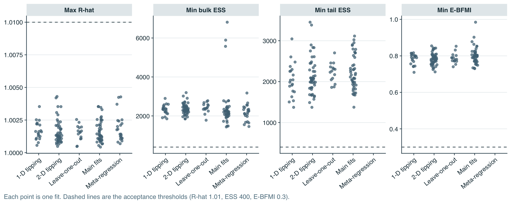
Across all 152 fits the largest R-hat is 1.004 (threshold 1.01), the smallest bulk ESS is 1434 and the smallest tail ESS is 1372 (threshold 400), and the smallest E-BFMI is 0.71 (threshold 0.3). There were 0 divergent transitions in total. Meta-regressions report bulk ESS only, so they appear in the first two panels.
sm |> group_by(Chain = .chain) |>
summarise(`Step size` = mean(stepsize__), `Mean tree depth` = mean(treedepth__), `Max tree depth` = max(treedepth__),
`Mean leapfrog steps` = mean(n_leapfrog__), `Mean acceptance` = mean(accept_stat__),
Divergences = sum(divergent__),
`E-BFMI` = sum(diff(energy__)^2) / sum((energy__ - mean(energy__))^2)) |>
mutate(across(c(`Step size`, `Mean tree depth`, `Mean leapfrog steps`, `Mean acceptance`, `E-BFMI`), \(x) round(x, 2))) |>
kable(caption = "Per-chain sampler diagnostics for F1 (post-warmup).")| Chain | Step size | Mean tree depth | Max tree depth | Mean leapfrog steps | Mean acceptance | Divergences | E-BFMI |
|---|---|---|---|---|---|---|---|
| 1 | 0.06 | 5.92 | 6 | 62.85 | 0.99 | 0 | 0.82 |
| 2 | 0.09 | 5.32 | 6 | 49.06 | 0.99 | 0 | 0.79 |
| 3 | 0.08 | 5.71 | 6 | 58.37 | 0.99 | 0 | 0.82 |
| 4 | 0.08 | 5.52 | 6 | 53.95 | 0.99 | 0 | 0.80 |
The four chains used similar step sizes and tree depths, none reached the maximum tree depth of 12, mean acceptance is close to the 0.99 target, and there were no divergences. Divergences matter because they can mean the sampler is missing part of the posterior, most often the neck of the funnel at small between-trial SD.
summarise_draws(subset_draws(fit$draws, variable = c("mu", "tau", "theta")), "mean", "sd", "rhat", "ess_bulk", "ess_tail") |>
mutate(across(where(is.numeric), \(x) round(x, 3))) |>
kable(caption = "Posterior summaries and convergence statistics for the pooled log-OR (mu), the between-trial SD (tau) and the per-trial effects (theta, in the order Marik, Confalonieri, Torres, ESCAPe, CAPE COD, APROCCHSS, REMAP-CAP).")| variable | mean | sd | rhat | ess_bulk | ess_tail |
|---|---|---|---|---|---|
| mu | -0.399 | 0.258 | 1.002 | 3811.268 | 4397.132 |
| tau | 0.494 | 0.247 | 1.003 | 2243.265 | 2044.500 |
| theta[1] | -0.512 | 0.529 | 1.001 | 7262.770 | 6186.033 |
| theta[2] | -0.964 | 0.637 | 1.001 | 3908.663 | 6778.937 |
| theta[3] | -0.437 | 0.381 | 1.000 | 7811.292 | 6554.679 |
| theta[4] | 0.001 | 0.264 | 1.004 | 4363.308 | 5712.295 |
| theta[5] | -0.611 | 0.241 | 1.000 | 6201.475 | 6446.836 |
| theta[6] | -0.465 | 0.168 | 1.000 | 7676.797 | 6903.298 |
| theta[7] | 0.100 | 0.338 | 1.002 | 4974.405 | 5367.138 |
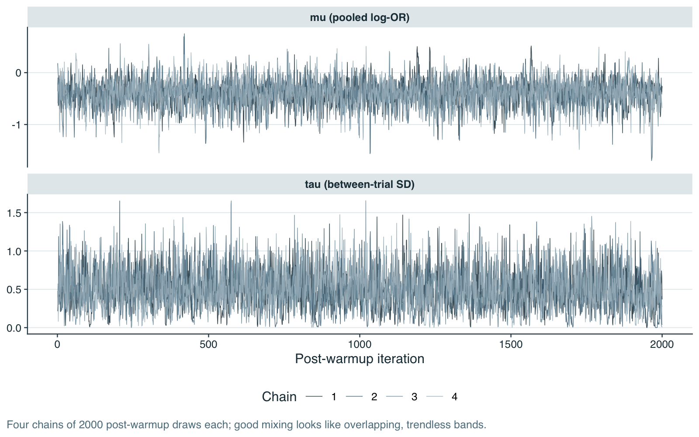
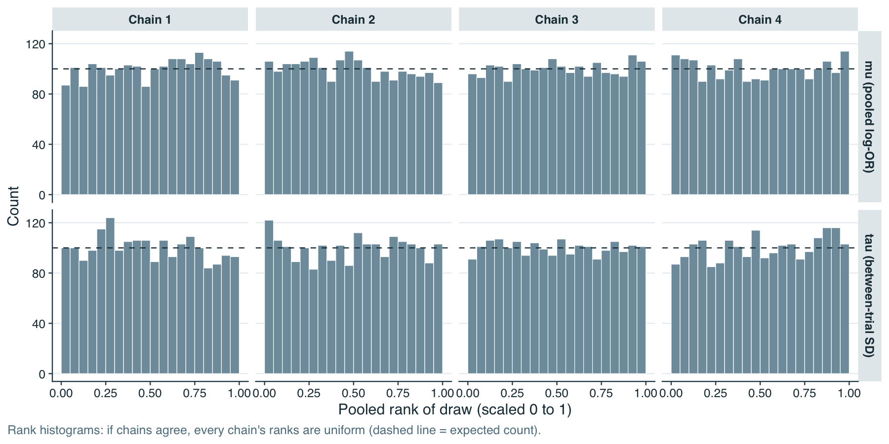
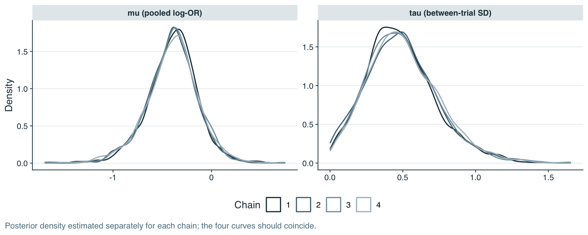
The traces overlap without drift, the rank histograms are close to uniform in every chain (the dashed line is the expected count), and the per-chain densities coincide. These are the visual counterparts of the R-hat values in the table above. Because tau is bounded at zero and skewed, its trace shows occasional excursions to large values; this is expected and is why it is judged by ESS rather than by eye alone.
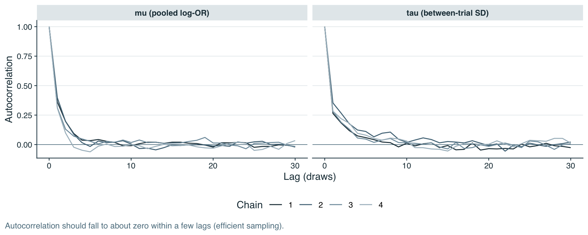
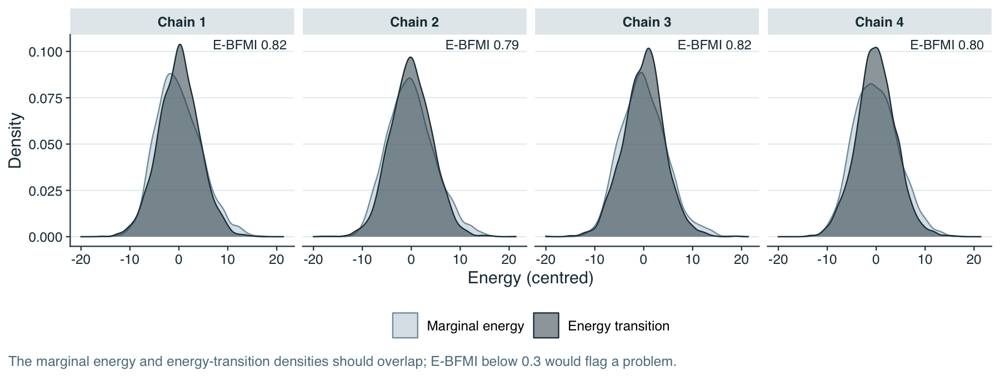
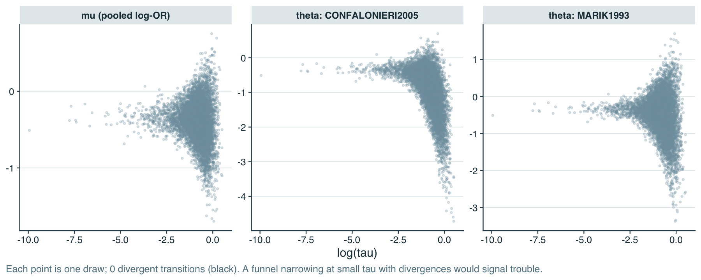
Autocorrelation falls to about zero within a few draws for mu, so the effective sample size for the main estimate is large (see the table); it is lower for tau. The energy plots show the marginal and transition densities overlapping in each chain, consistent with E-BFMI values well above 0.3. In the funnel plot the spread of the trial-level effects narrows as tau becomes small, as it must in a hierarchical model, but no divergent draws occur there, so the non-centred parameterisation is handling the funnel.
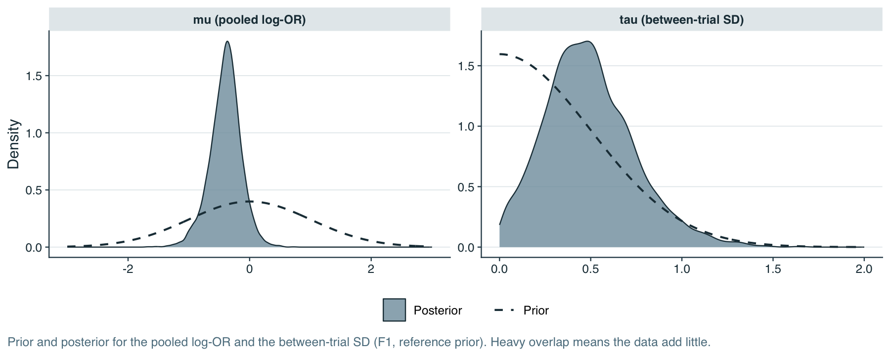
The posterior for the pooled log-OR is much narrower than its Normal(0, 1) prior, so the data are informative about the pooled effect. The posterior for tau is quite different: its median is 0.47 against a prior median of 0.34, and it keeps substantial mass near zero and out to large values, so seven trials add only a little information about between-trial heterogeneity. This is why conclusions depend on the tau prior (see the sensitivity page).
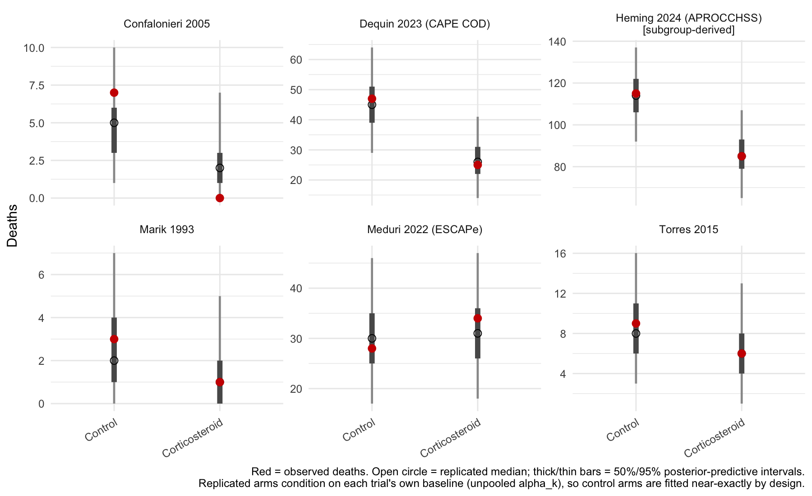
| Trial | Arm | Observed | Replicated median | 95% predictive interval | Inside interval |
|---|---|---|---|---|---|
| Marik 1993 | Corticosteroid | 1 | 1 | 0 to 5 | yes |
| Confalonieri 2005 | Corticosteroid | 0 | 2 | 0 to 7 | yes |
| Torres 2015 | Corticosteroid | 6 | 6 | 1 to 13 | yes |
| Meduri 2022 (ESCAPe) | Corticosteroid | 34 | 31 | 18 to 47 | yes |
| Dequin 2023 (CAPE COD) | Corticosteroid | 25 | 26 | 14 to 41 | yes |
| Heming 2024 (APROCCHSS) | Corticosteroid | 85 | 85 | 65 to 107 | yes |
| Marik 1993 | Control | 3 | 2 | 0 to 7 | yes |
| Confalonieri 2005 | Control | 7 | 5 | 1 to 10 | yes |
| Torres 2015 | Control | 9 | 8 | 3 to 16 | yes |
| Meduri 2022 (ESCAPe) | Control | 28 | 30 | 17 to 46 | yes |
| Dequin 2023 (CAPE COD) | Control | 47 | 45 | 29 to 64 | yes |
| Heming 2024 (APROCCHSS) | Control | 115 | 114 | 92 to 137 | yes |
12 of 12 observed arm counts lie inside their 95% predictive intervals. Control arms are reproduced closely because each trial has its own free baseline; the treatment arms are the more informative check, and they show no arm whose deaths the model finds implausible. With seven small to moderate trials this check has limited power, so it can rule out a gross misfit but not subtle ones.
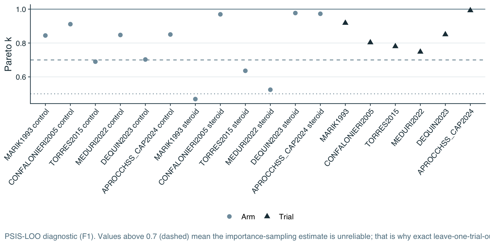
Most Pareto k values are above 0.7, which means PSIS-LOO is not reliable here: each trial has its own unpooled baseline that only that trial informs, so leaving a trial out changes the posterior too much to approximate by importance sampling. The project therefore uses exact leave-one-trial-out refits instead (see the model checking page).
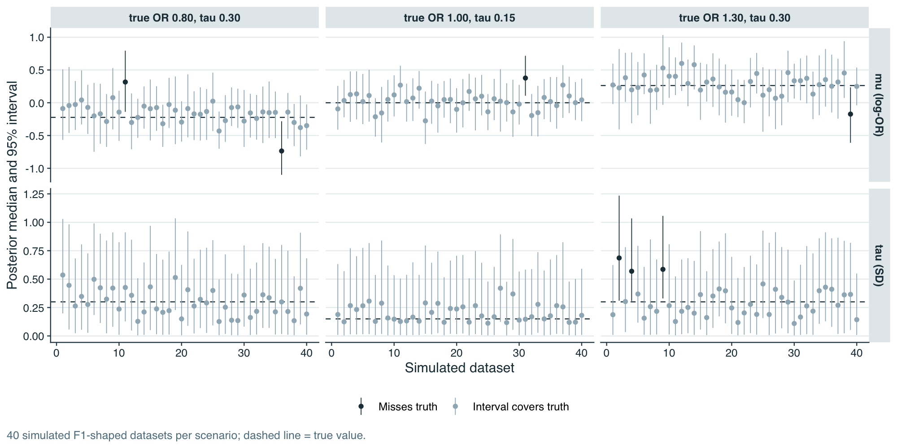
sim |> filter(variable %in% c("mu", "tau")) |>
mutate(scenario = sprintf("true OR %.2f, tau %.2f", exp(mu_true), tau_true), covers = `q2.5` <= truth & truth <= `q97.5`) |>
group_by(Scenario = scenario, Parameter = variable) |>
summarise(Datasets = n(), `Coverage of 95% interval` = mean(covers), `Mean bias (median - truth)` = mean(median - truth), .groups = "drop") |>
mutate(across(where(is.numeric) & !Datasets, \(x) round(x, 3))) |>
kable(caption = "Coverage and bias across simulated datasets.")| Scenario | Parameter | Datasets | Coverage of 95% interval | Mean bias (median - truth) |
|---|---|---|---|---|
| true OR 0.80, tau 0.30 | mu | 40 | 0.950 | 0.061 |
| true OR 0.80, tau 0.30 | tau | 40 | 1.000 | -0.002 |
| true OR 1.00, tau 0.15 | mu | 40 | 0.975 | 0.026 |
| true OR 1.00, tau 0.15 | tau | 40 | 1.000 | 0.051 |
| true OR 1.30, tau 0.30 | mu | 40 | 0.975 | 0.013 |
| true OR 1.30, tau 0.30 | tau | 40 | 0.925 | -0.001 |
Before any real fit, the model was run on data simulated from known values with the same trial sizes. The 95% intervals for the pooled effect cover the truth in about the nominal share of datasets, and tau is recovered with small bias; with only six or seven trials the tau interval is wide and drawn toward its prior, as in the real data. This shows the model can recover known values from data of this size and shape. It does not show that the real data follow the model.